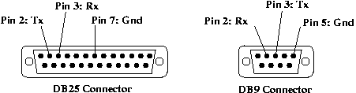
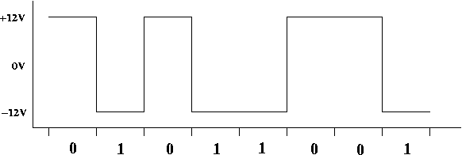
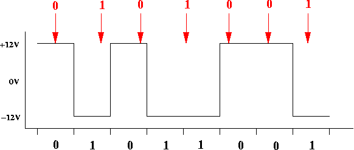
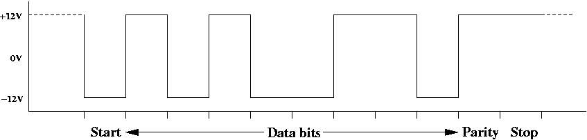
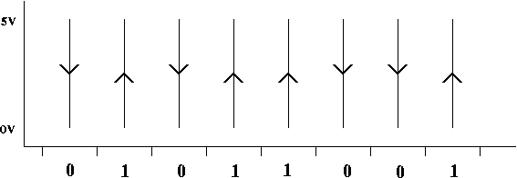
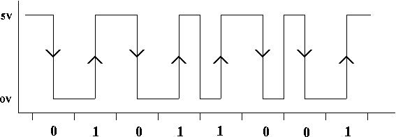
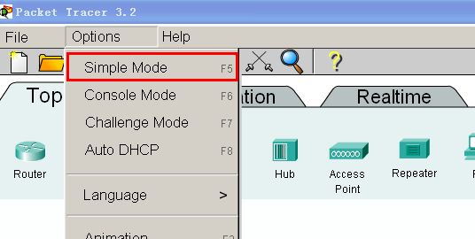
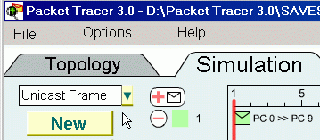
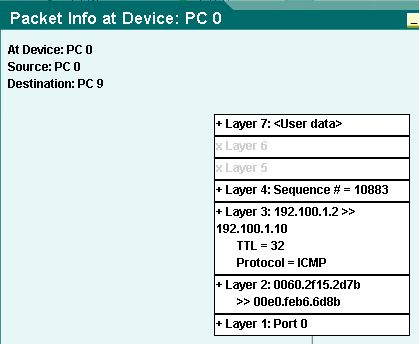

Workshop 2:
物理层, 链路层的帧(Frames) ， 包(Packets)
1: 引言
OSI参考模型中物理层的主要作用是：
- 定义了物理连接器的标准（插头、插座等）
- 定义了所使用的导线和它的用途
- 定义了所使用的电平以及这些电平所代表的比特位
因此，位于物理层之上的层可以仅仅传送一整个字符序列（由0和1组成）到物理层，物理层将字符序列传输给接收者，接收者再将字符序列解码为0和1.让我们来看一下字符序列是如何被解码的：换句话说，它们是如何通过导线被传输的。
2: RS-232
RS-232是一个非常古老的物理层标准，它可以追溯到20世纪50年代。 它主要用于在两台机器之间进行低速率串行通信（也就是每次传输一个比特位）。 当前，RS-232在连接个人PC到调制解调器（modem）和提供远程终端方面仍然发挥着作用。（但是现在绝大部分的串行连接都是通过USB实现的，USB使用4根导线，一根电源线，一根地线，还有用于传输数据的双绞线。USB使用差分模式和NRZI编码）。
最初的RS-232插头和插座有25个引脚，大部分的引脚都被指定有一个特定的功能。发展到现在，你也能发现PC机的RS-232插座后面有9个引脚，这9个引脚是RS-232标准中最常用的，如果需要使用更小的插座，这种只需要九个引脚的方案可以减少插座背部的空间。
对于RS-232标准中的25根导线，我们只关心其中的三条：
- 地线（GND）：运行在两个设备之间的导线，它是其他信号线的参考线。
- 数据发送线（Tx）：将PC机信号发送到外部调制解调器的导线。
- 数据接收线（Rx）：接收从调制解调器发送来的数据到PC机的导线。
这是两种RS-232连接器的引脚图：

2.1 NRZ编码
RS-232在Tx和Rx线上采用了非常简单的字符编码机制，称作不归零编码（Non-Return to Zero），简记做NRZ. 简单的说，“0”bit代表一个特定的电平，“1”代表另一个电平。在RS-232标准中，“0”代表+12V，“1”bit代表-12V。我们可以通过画图来说明它的编码方式，用X轴表示持续时间，Y轴表示导线上的电平值。
当使用RS-232标准发送比特时，每一个bit都有一个固定的持续时间。比如，如果我们每秒钟发送9600 bits，那么发送一个bit会持续1/9600秒，或者是0.104毫秒。下图展示了使用RS-232标准发送01011001的过程：

X轴的滴答时钟显示了每一个bit发送的开始和结束时间，你可以看到每个bit发送的持续时间是相同的。“0”代表+12V，“1”bit代表-12V。
为什么RS-232不选择0V来表示一个bit，比如0 bit呢？这是因为当两个设备连接成功后，他们之间的导线总是保持着-12V 或者 12V的电平，如果在任意时刻导线的电平变成了 0V，则这两个终端设备就认为连接断开了。
2.2 NRZ 是异步的
为了成功的对一个bit进行译码，接收者必须知道这个bit传输的开始和结束时间。但是对于NRZ来说不是那么的简单，因为接收方在传输过程中必须保持锁步（lock-step）状态。这也就是所说的同步状态。
想象一个场景，如果发送者每隔0.104毫秒发送一个bit，但是接收者处理一个bit很慢，它期望的bit发送速率是0.11毫秒。最终的结果是，接收者和发送者不能够实现同步，从而导致接收者解码了错误的bit。假设接收者是通过抓取一个bit中间时段的电平来作为判断接收的bit是0还是1的依据，如下图：

可以看到，由于接收者运行缓慢，它在接受的过程中丢失一个bit位，最终真正的字符序列01011001，而接收者则将其解码为0101001这个错误的序列了。
因为RS-232 使用 NRZ, 所以它是同步 传输系统：接收者仅通过接收到的电压高低不能够非常容易的判断出一个比特位的开始和结束时间。NRZ非常容易使接收者步调和传输步调出现不一致的情况。基于这个问题，RS-232进行了如下操作：
- 任意时刻在发送者和接收者之间不能够有超过8bit数据存在。
- 当导线没有数据传输时，将导线设置为0bit电平，即+12V。
- 当一个发送者想发送一些比特数据，它首先发送1，称作起始位。这样做可以让接收者知道数据何时到来。
- 起始位1发送之后，立即发送8位的数据。
- 发送完8位数据，发送者可以发送一个可选的校验位。发送者和接收者开始通信之前必须要协商好是否使用校验位。
- 当发送完了起始位、数据位和可选的校验位之后，发送者发送一个停止位，用0表示。在本次传输结束和下次开始传输之间必须要有至少一个停止位。否这，接收者不能够辨别下次数据传输是何时开始的。
这张图片展示了原始序列 01011001 使用RS-232传输的情况：

从图中可以看出，为了发送8bit数据，我们不得不需要实际发送11bit，所以当用RS-232传输数据的时候我们多传输了3/8或者是37.5%的数据量。
除了有可能出现丢失同步性的问题，NRZ还有另外一个严重的问题：随着信号在导线内传输，它会变得越来越弱，即出现信号衰减。最糟糕的情况是，信号已经变得非常微弱了（+12V 和 -12V的信号趋近于0V了），这样接收者就接收不到这些微弱的信号了。这个问题限制了使用NRZ传输信号的距离。RS-232规定的传输距离的上限大约是30英尺（10米）。
3: 曼彻斯特编码
NRZ 有两个主要的缺点：一是接收者不能够非常容易的辨别数据传输的开始和结束时刻，另一个缺点是当信号变得非常微弱时接收者会无法分辨接收到的bit是0还是1。曼彻斯特编码解决了这两个问题。
在曼彻斯特编码中，一个bit位并不表示一个电平值，而是电平值的改变，这称为电平转换。在比特中间总会出现电平转换。中间电平转换决定了这个比特的值是0还是1。用低电平到高电平的转换边表示“1”，用高电平到低电平的转换边表示“0”。
让我们来看一下中间转换的情况。这里演示的是01011001的曼彻斯特编码：

我已经将在RS-232中使用的电平值修改变位在以太网中使用的电平值，即上图中的Y坐标轴（以太网也确实使用的是曼彻斯特编码）。只要监测到了电平的改变，接收者就可以断定当前传送过来的比特值。同时，因为可以确定在比特中间肯定会出现电平转换，所以曼彻斯特编码是自同步的：接收者总是可以判断出一个比特的位置，也就是说接收者不会出现同步丢失的情况。这意味着我们一次可以发送成千上万的比特，而接收者也可以时刻保持同步并且成功接收全部的比特。
然而，曼彻斯特编码也有两个主要的缺点。第一个缺点,传送相同比特的字符序列，曼彻斯特编码消耗的带宽是NRZ的两倍,也就是说其信号跳变的频率是NRZ的两倍。为了说明第二个缺点，我们将上图中的电压转换连接起来，形成一个持续的电压传输：

从上图可以看出，这个比特序列至少有两个1和两个0，我们不得不在0和1之间进行跳变来让电平值恢复到开始位置。所以，在曼彻斯特编码中并不是每一个跳变都代表着一个比特位！
如果是这样的话，接收端如何知道哪一个电平跳变表示传输一个bit，哪一个跳变不代表传输bit呢？这个问题的解决方案是每次传输时携带一段前导码(preamble)。 前导码是一串0和1交替的字符序列。因为前导码中相邻的两个bit是不同的，接收端仅仅是把它们看作是比特传输，同时接收端也可以锁定发生在比特中间的跳变。前导码的尾部是两个连续的1，用来通知接收端前导码结束了，接下来传输的就是真正的数据了。
以太网可以一次最多发送1500字节（12000bit）的数据，这就是所谓的帧（frame）,每一个以太网帧必须以64bit的前导码作为开始，这样帧传输的实际利用率能够达到99.5%，远高于RS-232的利用率。
3.1 作业
给出下面的字符序列，画出使用RS-232 NRZ 和曼彻斯特编码的电平/时间坐标图。对于RS-232，假设不使用奇偶校验，只需画出起始位、8bit的数据和终止位即可。对于曼彻斯特编码，不需画出前导码，只要画出8bit数据即可。
- 00001000
- 10110001
- 10000010
- 11110100
- 01101110
- 00000000
4: Packet Tracer
在本次课程中，我们将要使用一款网络模拟工具：Packet Tracer。这款模拟器可以让你看到帧和数据包在网络中的传输过程。
4.1 练习一
启动 Packet Tracer.在软件的安装目录下有一个帮助文档，如果需要进一步了解这款软件可以查阅此文档。
你可以通过左边栏菜单的内容来学习如何使用本模拟器。在本周，让我们先来练习"Getting started",
"Topology Mode", 和 "Simulation Mode"这三部分。随后我们将做一些习题。
重要提示: 确保将你的模拟器设置成“简单模式”，这样构建网路的时候会相对容易一些。选择Options菜单下的Simple Mode即可：

4.2 练习二
在本周所提供的资料中, 你会发现一个文件----unibroadcast.pkt。
双击这个文件就可以运行了。
点击“Simulation”(模拟)标签, 当你进入仿真模式后，选择"Unicast Frame"（单播帧）方案，如下图所示：

在这个方案中，PC 0 将发送一个单播帧到 PC 9。 单播帧的意思是只有一个目的终端接收这个帧。单击位于PC 0 上面的帧，查看一下源地址和目的地址（Lay 2地址）。你看到的内容应该和下图是一样的：

你可以点击每一个加号（“+”），用来查看关于在OSI模型中每一层处理数据的相关信息。
现在点击开始按钮来运行本方案。仔细观察帧是如何从PC 0 被转发到 PC 9的。
4.3 练习三
当数据包到达PC 9后, 在本方案中增加一个从PC 1 发送到 PC 5的新数据包。点击位于仿真标签下方的"+ envelope" 图标，然后点击PC 1，最后点击PC 5。
再新增加一个从 PC 2 到 PC 4的数据包。
运行模拟器。查看当两个新数据包同时进入集线器（hub）会怎样，思考一下为什么结果是帧到达了PC 0 而不是 PC
8 或者是 PC 9?
(注意: 局域网内可能有多个集线器、中继器、网桥、交换机和路由器。
- 网桥、交换机和路由器隔离冲突域。
- 中继器和集线器扩大冲突域。
我们将在下节课来更详细的讨论这个话题).
4.4 练习四
我们再来增加两个新数据包。一个是从 PC 7 到 PC
10, 另一个从 PC 8 到 PC 9. 运行模拟器。查看这次两个包同时进入交换机会出现什么情况。解释一下为什么PC 9 和 PC 10 会接收到数据。
再次运行本方案。当两个数据包同时进入交换机，点击每一个包，然后点击每一个包中的“+”号，查看交换机是如何做出决定的。
4.5 练习五
选择“Simulation”标签内有一个下拉列表，选择其中的“Broadcast Frame”（广播帧）方案。在这个方案中， PC 0 将会通过一个特殊的链接地址ff:ff:ff:ff:ff:ff来发送一个广播帧。如果一个站点将一个帧发送到这个特殊的地址，所有的站点都会收到这个帧，并且它们都会保留这些帧。
现在运行本方案，查看帧是如何由 PC 0 发送到所有站点的。
4.6 冲突域 vs. 广播域
在workshop2给出的相关资料中, 你会看到另一个 Packet Tracer 方案: bcastdomain.pkt ，现在打开它。
方案中两个局域网（为了描述方便，将方案中位于上方的局域网称作上方局域网，位于方案下方的局域网称作下方局域网）通过一个路由器连接：现在我们只关心商法局域网。切换到simulation模式，在左上角的下拉列表中选择“Collision Domain”方案。
在时刻 1, PC 0 正在发送一个帧到 PC 11，同时 PC 5 正在发送一个帧到 PC 2. 当两个帧在时刻2同时到达集线器0时， 它们在集线器内的总线中发生冲突。然后集线器将信号（比如冲突信号）发送到所有的站点，在本方案中集线器1也会收到冲突信号，同样地，集线器1也会将冲突信号发送到连接到它上的所有站点。所以，上方的整个局域网都处在同一个冲突域中。
返回到模拟器中的“Collision Domain”方案。这次，在时刻6开始运行并观察下方局域网。PC 12 和 PC 17将同时发送帧。和上一个实验一样，帧会在集线器的总线中发生冲突，集线器会将冲突传播出去。观察冲突信号到达交换机时的情景。
仍然停留在simulation模式中，但是将方案更改为“Broadcast Domain”。在这个方案中， PC 0 将会在时刻1发送一个广播帧，观察它在局域网中的传播。在时刻6重新启动模拟器，这次 PC 12
将会发送一个广播帧，观察它在局域网中的传播。
路由器传递广播了吗？它是隔离了还是扩大了广播域？
在本次方案中圈出广播域的范围。
4.8 练习
试着操作Packet Tracer模拟器。再根据自己的想法增加一些包并查看它们是如何传播的和传播到了哪里。
5 相关网页
NRZ Encoding
Manchester Encoding
Ethernet Preamble
6 作业
1. 一个电视屏幕由480行和500列的栅格组成（总共是480 x 500像素值）。每一个像素可以呈现32种颜色（灰度值）的其中一种。假设通过数字交换频道，每秒钟从一个电视发送出去30张图片(帧)到另外一个系统。试着算出这个频道的源数据传输率（每秒钟的bit数）。（这个问题的答案可以说明视频图片的数据传输率是相当高的。换句话说，它进行数据通信耗费了大量的带宽。）
2. 教材第63页习题2-07:假定某信道受奈氏准则限制的最高码元速率为20000码元/秒。如果采用振幅调制，把码元的振幅划分为16个不同等级来传送，那么可以获得多高的数据率（b/s）?
3. 教材第63页习题2-09